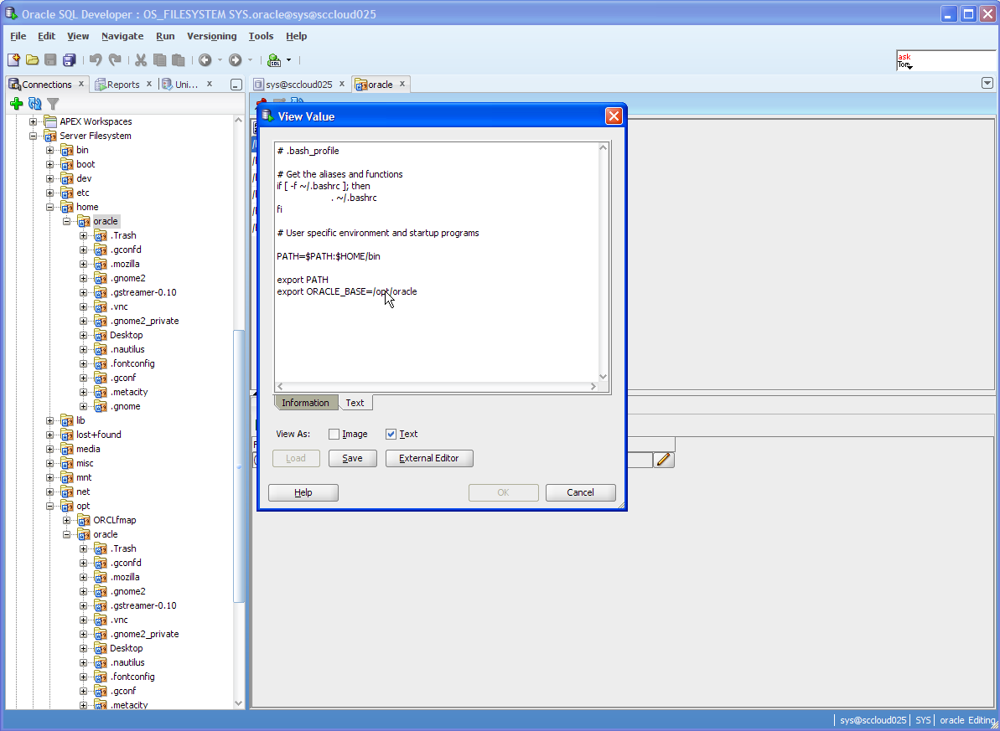
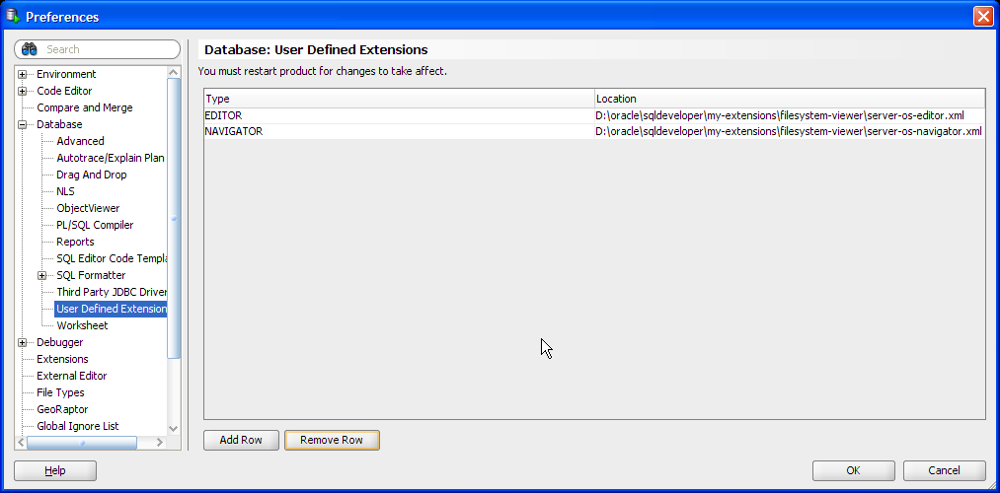

This extension allows you to view the server filesystem contents with Oracle SQL Developer:

Server Filesystem in SQL Developer
INSTALLATION
- Copy the XML files to a directory of your choice on the machine where SQL Developer is installed
- Start SQL Developer (Version 1.5 or higher; 2.1 recommended)
- Navigate to Tools, then Preferences.
- Choose Database, then User-Defined Extensions in the navigation tree.
- Add the file server-os-editor.xml as type EDITOR
- Add the file server-os-navigator as type NAVIGATOR
- Click OK to save the changes.
- Restart SQL Developer

|